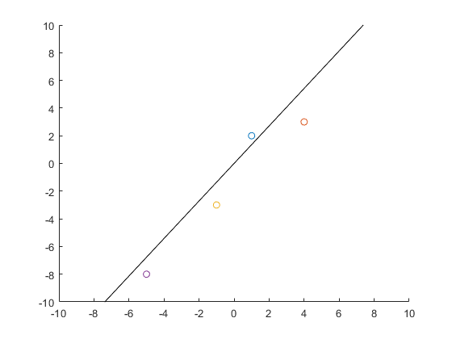

Contents
9.1
syms x;
A = [ -1 0 2 2 2 ; 0 2 3 0 1 ; 1 2 -2 1 2]
C = transpose(A)
B = A*C
y = det(B - x * eye(3))
z = double(solve(y == 0, x))
s = sqrt(z)
[T,E] = eig(B)
T = T*-1
v1 = C * T(:,3)/norm(C * T(:,3))
v2 = C * T(:,2)/norm(C * T(:,2))
v3 = C * T(:,1)/norm(C * T(:,1))
[U,S,V] = svd(A)
A =
-1 0 2 2 2
0 2 3 0 1
1 2 -2 1 2
C =
-1 0 1
0 2 2
2 3 -2
2 0 1
2 1 2
B =
13 8 1
8 14 0
1 0 14
y =
- x^3 + 41*x^2 - 495*x + 1638
z =
14.0000
5.4223
21.5777
s =
3.7417
2.3286
4.6452
T =
0.7287 0.0000 -0.6849
-0.6796 -0.1240 -0.7230
-0.0849 0.9923 -0.0904
E =
5.4223 0 0
0 14.0000 0
0 0 21.5777
T =
-0.7287 -0.0000 0.6849
0.6796 0.1240 0.7230
0.0849 -0.9923 0.0904
v1 =
-0.1280
0.3502
0.7229
0.3143
0.4894
v2 =
-0.2652
-0.4641
0.6298
-0.2652
-0.4972
v3 =
0.3494
0.6567
0.1767
-0.5894
-0.2610
U =
0.6849 0 -0.7287
0.7230 -0.1240 0.6796
0.0904 0.9923 0.0849
S =
4.6452 0 0 0 0
0 3.7417 0 0 0
0 0 2.3286 0 0
V =
-0.1280 0.2652 0.3494 0.6403 0.6175
0.3502 0.4641 0.6567 -0.0176 -0.4801
0.7229 -0.6298 0.1767 0.1601 0.1544
0.3143 0.2652 -0.5894 0.6051 -0.3427
0.4894 0.4972 -0.2610 -0.4450 0.4970
10.1
p1 = [1 ; 2]
p2 = [4 ; 3]
p3 = [-1 ; -3]
p4 = [-5 ; -8]
hold on;
axis([-10 10 -10 10])
scatter(p1(1,1), p1(2,1))
scatter(p2(1,1), p2(2,1))
scatter(p3(1,1), p3(2,1))
scatter(p4(1,1), p4(2,1))
A= [p1 p2 p3 p4]
M = mean(A, 2)
C = A - M
[U,S,V] = svd(C)
plot([0 ; U(1,1) * 20], [0 ; U(2,1) * 20] , 'k')
plot([0 ; U(1,1) * -20], [0 ; U(2,1) * -20] , 'k')
p1 =
1
2
p2 =
4
3
p3 =
-1
-3
p4 =
-5
-8
A =
1 4 -1 -5
2 3 -3 -8
M =
-0.2500
-1.5000
C =
1.2500 4.2500 -0.7500 -4.7500
3.5000 4.5000 -1.5000 -6.5000
U =
-0.5938 -0.8046
-0.8046 0.5938
S =
10.8608 0 0 0
0 1.3390 0 0
V =
-0.3276 0.8009 0.2357 0.4423
-0.5657 -0.5583 -0.0267 0.6062
0.1521 -0.2145 0.9647 -0.0130
0.7412 -0.0281 -0.1142 0.6608

10.4
A = [ 2 3 0 0 0 0 ; 0 0 1 0 0 0 ;
3 3 0 0 0 0 ; 0 0 5 5 5 5 ]
[U,S,V] = svd(A)
SP = S;
SP(3,3) = 0;
SP(4,4) = 0
B = U*SP*transpose(V)
AC = A - mean(A)
BC = B - mean(B)
x = norm(AC(:,1))^2 + norm(AC(:,2))^2 + norm(AC(:,3))^2 + norm(AC(:,4))^2 + norm(AC(:,5))^2 + norm(AC(:,6))^2
y = norm(BC(:,1))^2 + norm(BC(:,2))^2 + norm(BC(:,3))^2 + norm(BC(:,4))^2 + norm(BC(:,5))^2 + norm(BC(:,6))^2
y/x * 100
A =
2 3 0 0 0 0
0 0 1 0 0 0
3 3 0 0 0 0
0 0 5 5 5 5
U =
0 -0.6464 0 0.7630
-0.0503 0 -0.9987 0
0 -0.7630 0 -0.6464
-0.9987 0 0.0503 0
S =
10.0126 0 0 0 0 0
0 5.5414 0 0 0 0
0 0 0.8649 0 0 0
0 0 0 0.5414 0 0
V =
-0.0000 -0.6464 -0.0000 -0.7630 0 0
0.0000 -0.7630 0.0000 0.6464 0 0
-0.5038 0 -0.8638 0 0 0
-0.4987 0 0.2908 0 -0.5774 -0.5774
-0.4987 0 0.2908 0 0.7887 -0.2113
-0.4987 0 0.2908 0 -0.2113 0.7887
SP =
10.0126 0 0 0 0 0
0 5.5414 0 0 0 0
0 0 0 0 0 0
0 0 0 0 0 0
B =
2.3152 2.7330 0 0 0 0
0.0000 -0.0000 0.2538 0.2512 0.2512 0.2512
2.7330 3.2262 0 0 0 0
0.0000 -0.0000 5.0376 4.9873 4.9873 4.9873
AC =
0.7500 1.5000 -1.5000 -1.2500 -1.2500 -1.2500
-1.2500 -1.5000 -0.5000 -1.2500 -1.2500 -1.2500
1.7500 1.5000 -1.5000 -1.2500 -1.2500 -1.2500
-1.2500 -1.5000 3.5000 3.7500 3.7500 3.7500
BC =
1.0531 1.2432 -1.3228 -1.3096 -1.3096 -1.3096
-1.2620 -1.4898 -1.0691 -1.0584 -1.0584 -1.0584
1.4709 1.7364 -1.3228 -1.3096 -1.3096 -1.3096
-1.2620 -1.4898 3.7147 3.6777 3.6777 3.6777
x =
89
y =
88.1280
ans =
99.0202
10.11